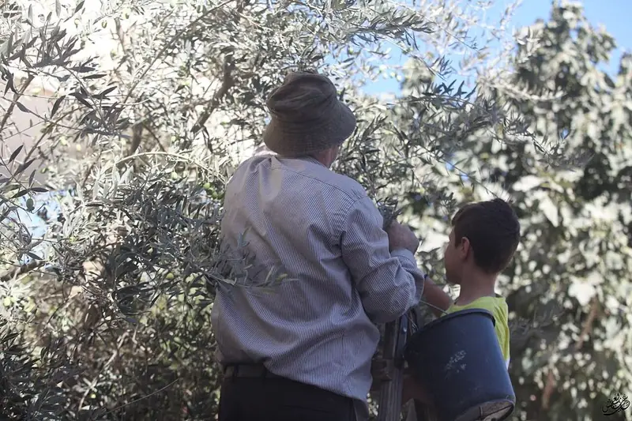
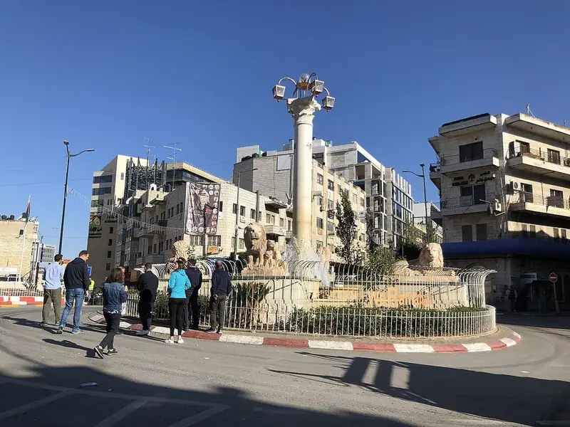

Harvest season begins across the northern West Bank
Families in villages around Nablus and Jenin have begun picking, with the season expected to run for several weeks.

Verified updates from Gaza, the West Bank and Jerusalem through the day, with the context behind them.
LiveUpdated PalestineBy [Reporter name] and [Reporter name]
1 min ago
[Two or three sentences: what happened, where, and according to whom.]
2 min ago
[What happened, where, and according to whom. Anything not yet verified is labelled as such.]
Pinned · summary
3 min ago
[Two or three sentences: what happened, where, and according to whom. Every update names its source, and anything we have not verified is labelled as such.]
21 min ago

46 min ago
[The statement’s key line, quoted as issued.]
[Context: who issued it, when, and what it responds to.]
Context
The harvest usually begins in October, often after the first autumn rain, and continues into November. Our feature from Nablus walks through the season step by step.
Families in villages around Nablus and Jenin have begun picking, with the season expected to run for several weeks.

We will bring you verified updates through the day from our correspondents in Gaza, Nablus, Ramallah and Jerusalem. [Editor name] is editing.